Búsqueda activa
Graduado en RRLL y RRHH por la Universidad de Sevilla. Selección técnica, HR Tech e IA al servicio del potencial humano. Tech + Heart.
Adrián Valencia
- 01Talent Acquisition
- 02Prompt Engineering
- 03Cultura & Bienestar
- 04People Analytics
Perfil
Human ResourcesMetodologías de alto impacto formadas en instituciones de élite y validadas por resultados reales.
Graduado en la Universidad de Sevilla, formado en selección técnica, HR Tech e Inteligencia Artificial. Con una vocación clara: unir tecnología y personas para transformar la captación de talento.
- HR Recruiter
- Especialista en IA
- Talent Acquisition


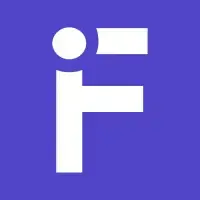
Mi labor es el equilibrio: rescatar la verdad en medio del ruido. Devolver el aire a la identidad. Un puente hacia lo que de verdad importa: lo humano.
Proyectos
InspiraciónCada proyecto es una oportunidad de progreso. Una frecuencia que solo se capta en silencio, allí donde vida y arte conviven. Estas obras son fragmentos de búsqueda— conectar lo que somos y lo que aspiramos a ser.

Mi historia
Real & honesto- 01/05Mi ser.
Quién.
Mi nombre es Adrián Valencia Ríos, un chico de Sevilla. Interesado por el lado humano de la vida siempre he sido cautivado por la sensibilidad. Esta virtud me ha permitido divagar por los matices, acabando en el sector de los RRHH.

- 02/05Mi afán.
Por qué.
Esa conexión ha sido la culpable de mi énfasis en la psicología y comportamiento del trabajador, y en última instancia, de mi curiosidad dentro del departamento de Selección y Personas

- 03/05Mi pasión.
Cómo.
La pasión con la que me aferro a las cosas es extrapolable a mil sentidos. El arte, multiplicador de vidas. La música, recopiladora de mis historias. El deporte, sanador de dolores. La filosofía, embellecedora de corazones.

- 04/05Mi vida, profesional.
Hasta dónde.
Consciente de lo que soy, feliz. Orgulloso de mi ser, anhelando crecer. Mi meta profesional es el desarrollo de otras facetas propias. Empaparme de conocimientos y experiencias. Crecer como persona. Ser independiente.

- 05/05Presente & Futuro.
¿Contigo?
Actualmente me encuentro en búsqueda activa de un nuevo rol para convertirme en el mejor profesional en RRHH. Mi especialidad se basa en la selección. Formado en IA, y con conocimientos en Inglés. Busco un vínculo, un ciclo de realimentación. Una oportunidad para continuar siendo.


Capacidades
Execution- 01
Selección Técnica
Análisis psicológico y sociológico del trabajador (US). Centrado en la identidad y el clima organizacional para optimizar el encaje entre el propósito de la persona y la visión estratégica de la compañía.
- 02
IA & Prompt Engineering
Especialista en IA Generativa (MIT/Microsoft). Enfocado en el diseño de flujos automatizados y en elevar la estrategia de selección a niveles de alta productividad.
- 03
Selección de Talento IT
Dominio del ciclo integral de Selección IT. Desde el sourcing a la criba técnica, garantizando una Candidate Experience ágil y diferencial.
- 04
Inglés Funcional y Bienestar
Dominio funcional del inglés (UPenn) aplicado a entornos internacionales. Diseño de culturas organizacionales basadas en ética, diversidad (DEI) y resiliencia, garantizando el equilibrio entre tecnología y bienestar humano.
Publicaciones
Visual JournalColaboraciones con @weloveurban: análisis sonoros y narrativos donde la música y la vida chocan.
 19 feb 202611 minutosBoJack & Weird FishesLa vista a mitad de la caida puede sonar como a un arpeggio dentro del arcoiris, peces "raros" fuera del agua. La romántica idea del suicidio desaparece. Sale a flote el coraje para seguir.
19 feb 202611 minutosBoJack & Weird FishesLa vista a mitad de la caida puede sonar como a un arpeggio dentro del arcoiris, peces "raros" fuera del agua. La romántica idea del suicidio desaparece. Sale a flote el coraje para seguir.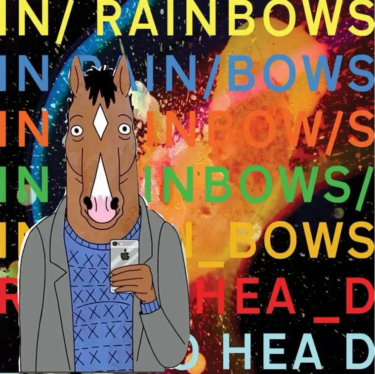
29 nov 202510 minutosBoJack & In RainbowsEl asombro de perderse en la música y el tesoro de una primera experiencia. Y qué gran experiencia— y mejor álbum. 16 dic 20252 minutosRobe & ExtremoduroFrente a un mundo de filtros y marketing vacío— la reivindicación de la verdad desnuda.
16 dic 20252 minutosRobe & ExtremoduroFrente a un mundo de filtros y marketing vacío— la reivindicación de la verdad desnuda.- 11 dic 202511 minutosAll I Need & BoJackLa profunda necesidad de ser "visto" y amado. Esa breve línea entre el orden y el caos, entre el amor y la autodestrucción. Las dualidades de la vida…como un abrazo helado que te llena de calor.
Resonancia
SoulMúsica —
Corazón.
Cautivadora de corazones.
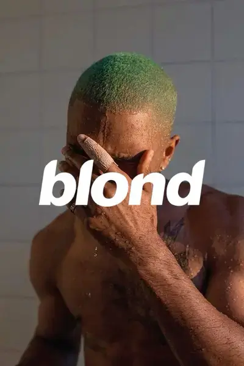
BlondeFrank OceanBlonde — Frank Ocean en Spotify (se abre en una pestaña nueva)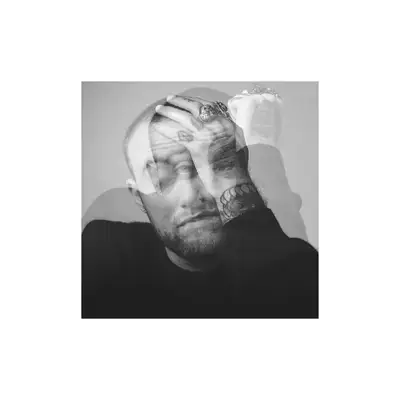
CirclesMac MillerCircles — Mac Miller en Spotify (se abre en una pestaña nueva)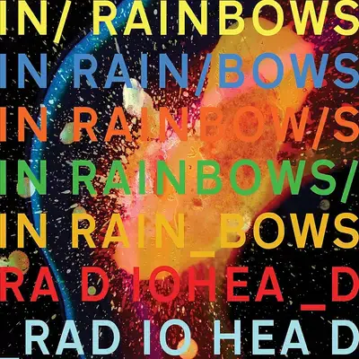
In RainbowsRadioheadIn Rainbows — Radiohead en Spotify (se abre en una pestaña nueva)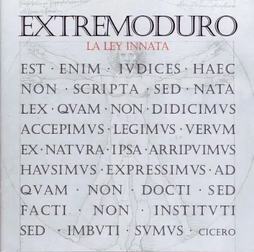
La ley innataExtremoduroLa ley innata — Extremoduro en Spotify (se abre en una pestaña nueva)
Philo.
Vintage.
Recopiladora de historias. Culpable de mis pasiones.
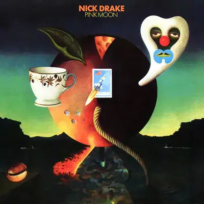
Pink MoonNick DrakePink Moon — Nick Drake en Spotify (se abre en una pestaña nueva) Bon Iver, Bon IverBon IverBon Iver, Bon Iver — Bon Iver en Spotify (se abre en una pestaña nueva)
Bon Iver, Bon IverBon IverBon Iver, Bon Iver — Bon Iver en Spotify (se abre en una pestaña nueva) Brasilian SkiesMasayoshi TakanakaBrasilian Skies — Masayoshi Takanaka en Spotify (se abre en una pestaña nueva)
Brasilian SkiesMasayoshi TakanakaBrasilian Skies — Masayoshi Takanaka en Spotify (se abre en una pestaña nueva)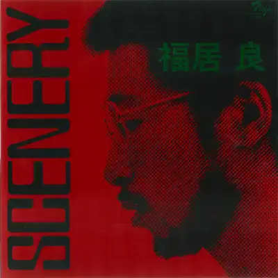
SceneryRyo FukuiScenery — Ryo Fukui en Spotify (se abre en una pestaña nueva)
Strat.
Leyenda.
Sinónimo de alma dulce.
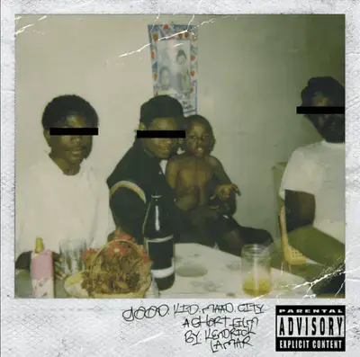
good kid, m.A.A.d cityKendrick Lamargood kid, m.A.A.d city — Kendrick Lamar en Spotify (se abre en una pestaña nueva)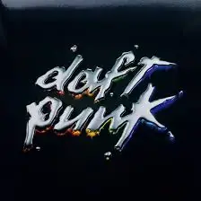
HomeworkDaft PunkHomework — Daft Punk en Spotify (se abre en una pestaña nueva)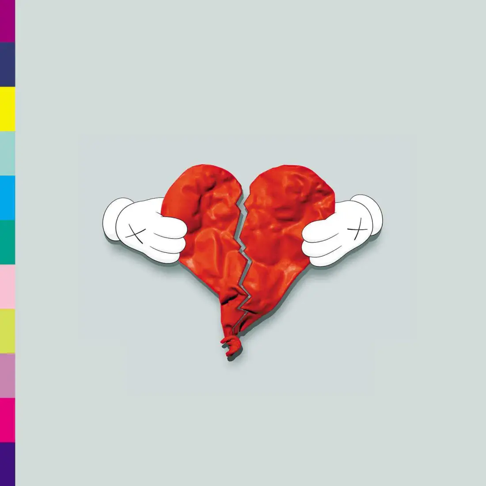
808s & HeartbreakKanye West808s & Heartbreak — Kanye West en Spotify (se abre en una pestaña nueva) Wish You Were HerePink FloydWish You Were Here — Pink Floyd en Spotify (se abre en una pestaña nueva)
Wish You Were HerePink FloydWish You Were Here — Pink Floyd en Spotify (se abre en una pestaña nueva)
Flow.
Vanguardia.
Y que la vida me ilustre.
 MilagroDELLAFUENTEMilagro — DELLAFUENTE en Spotify (se abre en una pestaña nueva)
MilagroDELLAFUENTEMilagro — DELLAFUENTE en Spotify (se abre en una pestaña nueva) Is This ItThe StrokesIs This It — The Strokes en Spotify (se abre en una pestaña nueva)
Is This ItThe StrokesIs This It — The Strokes en Spotify (se abre en una pestaña nueva) My Beautiful Dark Twisted FantasyKanye WestMy Beautiful Dark Twisted Fantasy — Kanye West en Spotify (se abre en una pestaña nueva)
My Beautiful Dark Twisted FantasyKanye WestMy Beautiful Dark Twisted Fantasy — Kanye West en Spotify (se abre en una pestaña nueva) Late RegistrationKanye WestLate Registration — Kanye West en Spotify (se abre en una pestaña nueva)
Late RegistrationKanye WestLate Registration — Kanye West en Spotify (se abre en una pestaña nueva)
Cultura
Composure
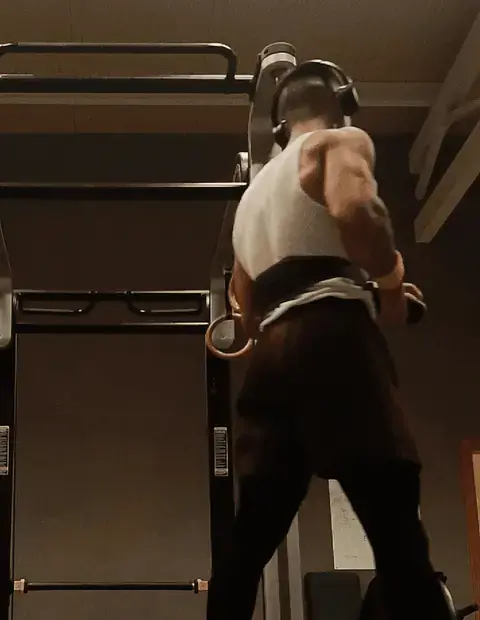

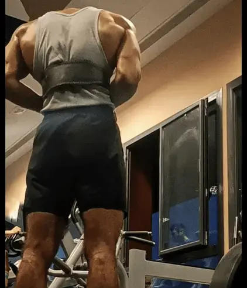

El arte, multiplicador de vidas. La música, recopiladora de mis historias. El deporte, sanador de dolores. La filosofía, embellecedora de corazones.
FAQ
Help CenterAclarando cuestiones.
Empezando un proceso real y honesto.
Soy feliz, y eso es mucho. Soy realista, aun así elijo tener una buena perspectiva. Soy consciente de quién soy y de mi entorno. Eso me permite actuar de forma genuina y real. Aún así, a veces es necesario lanzarse a la aventura. "Caminante no hay camino, se hace camino al andar". A veces debemos dar el primer paso, y crear nuestro destino en consecuencia.
Aporto una arquitectura de pensamiento orientada a la automatización de procesos vacíos. Mi objetivo es usar la tecnología para liberar el tiempo necesario que requiere la verdadera gestión humana: el diálogo y el bienestar.
Sigo marcos de Prompting Responsable. Entiendo la IA como un soporte, no como un decisor. Realizo auditorías manuales de sesgos para asegurar que los procesos de selección sean siempre justos, diversos e inclusivos.
Porque para encontrar talento hay que saber escuchar lo que no se dice. Mi colaboración en medios digitales me ha enseñado a descifrar narrativas y a conectar con audiencias internacionales. El arte me da la empatía y el contexto cultural que a veces los datos no pueden capturar.
Más allá de mi formación con la UPenn, el inglés es un idioma que ha estado presente en mi vida de forma constante. Lo aplico de manera práctica como Music Content Collaborator en Instagram, colaborando en una de las cuentas pioneras del sector musical. Mi vida técnica y mis aficiones giran en torno a este idioma: Música, Arte, Deporte, Lectura y Filosofía. Aunque siempre hay margen de mejora para alcanzar la excelencia, cuento con la capacidad necesaria para comenzar a operar en cualquier entorno
Busco el terreno donde transicionar y convertirme en el mejor profesional. Espero encontrar líderes que gestionen por confianza y sistemas que permitan que la innovación fluya. Busco la orilla donde mi capacidad encuentre su utilidad definitiva. Poder evolucionar.
No soy "vendehumos". Nadie es perfecto. Dicho eso, realmente me considero una persona completa. Me siento orgulloso de quien soy, desde lo personal hasta lo profesional, desde mis pasiones a mis actuaciones. Me siento capaz de actuar según lo esperable; y más importante, aprender y superarme.